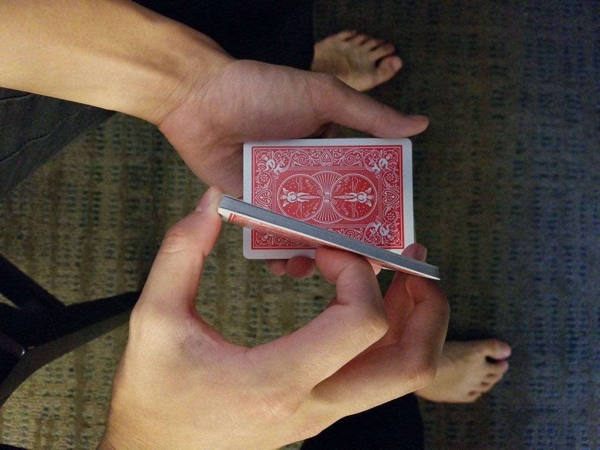
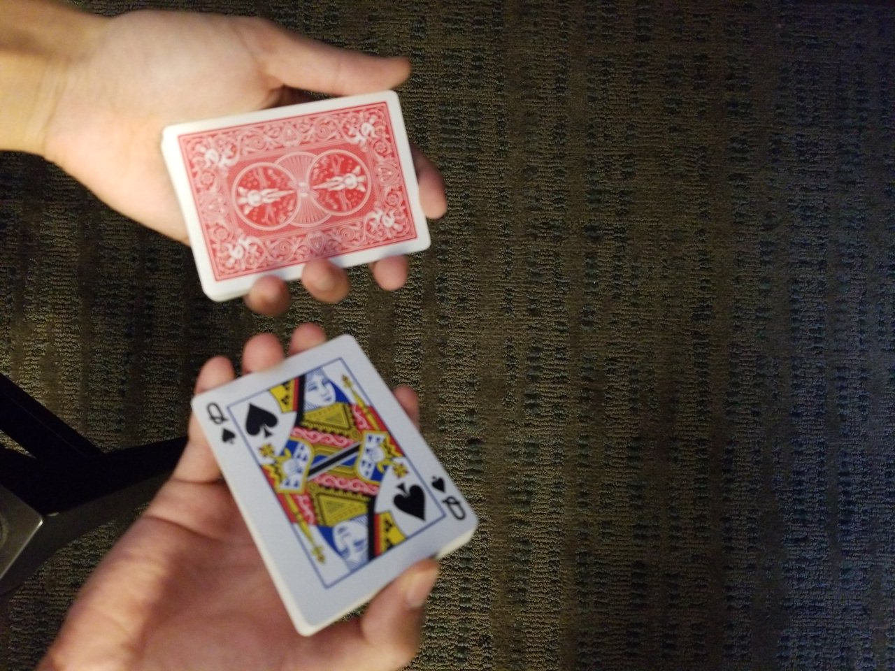
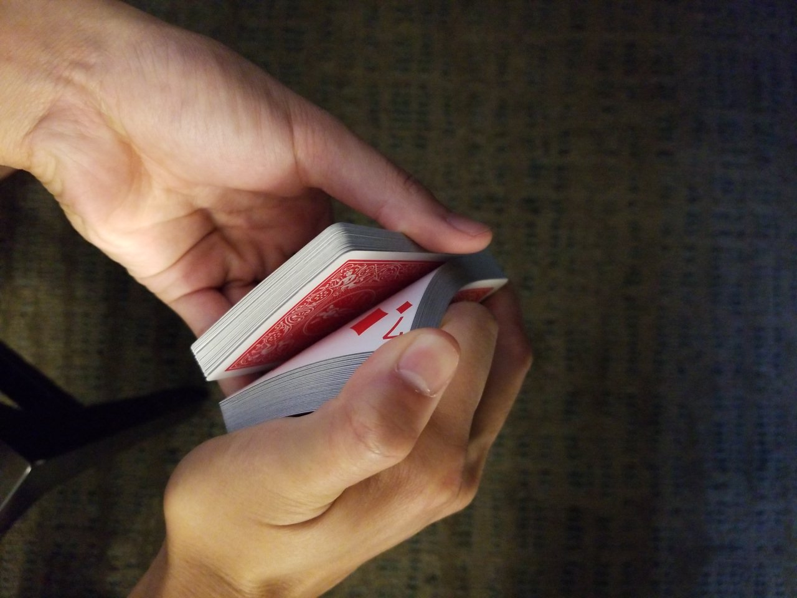

In this post, I'll try to bring together two things I enjoy: rationality and magic. Like Hazard, I've also practiced close-up magic for a good amount of time now. After recently seeing Tyler Alterman make a Facebook post about estimations and System 1, it occurred to me that there are a few calibration exercises you can do with a deck of playing cards. The three exercises below are all variants of cutting/manipulating a deck of cards, and then trying to intuit something about the deck.
This serves three purposes:
- Get a feel for your System 1:
- The goal of the following three exercises is to see how good your gut is at estimating uncertainty (hint: probably better than you think!)
- Improve calibration:
- These exercises all allow for some room for error. You can set your confidence intervals and see how quickly you can get calibrated using first principles.
- Practice cool party tricks:
- While I don't intend for this to be a full-on magic tutorial, the exercises I outline are building blocks for magic tricks, and even demonstrating your super-calibration (after getting good) might be impressive.
Here are the three exercises:
Cut Estimation

The simplest exercise is as follows:
- Lift up a packet of cards.
- Estimate how many cards you've picked up.
- Count to check how many you actually picked up.
You have a few obvious reference points. The entire deck is 52 cards, and you can easily tell if you've lifted up more or less than half. With a little practice. I've found that my gut is pretty good at this sort of thing. I'll ask myself how many cards, and there will be a number that feels right. It's usually quite close.
Things to pay attention to:
- When your System 2 estimate conflicts with your System 1 gut answer of how many cards you cut off.
- Whether you are systematically over or underestimating the amount.
Repeating The Cut

This is similar to the first one:
- Cut to a card.
- Replace the pack on the deck.
- Cut to the same card again.
Cutting to the same place twice is not easy, even with practice.
Things to pay attention to:
- When you try to cut to the card a second time, how quickly does your gut know that you got it right or wrong?
- What does it feel like to "know" that the pack of cards in your hand is not the same size as the first time?
- If you know you got it wrong, do you know if you cut too much or too little? And by how much?
Riffle Peek
This one is something I've just started playing with recently, and it's a mildly superhuman feat to get down right, if I say so myself.

- Name a card. Any playing card.
- Riffle through the cards, watching the corners (where the number and suits are) flip towards you, and look for the card you named.
- Using the information in 2, cut to where you saw the card.
This is difficult. It's partially an estimation task because you need to know approximately where through the deck you saw the card, i.e. half-way, at the end, etc. To start, you can go slow, such that you can see each card as it slips off your thumb.
This gets harder the faster you riffle through the cards. To ramp up the difficulty, riffle faster, such that you can only get a fractional peek at each card's corner.
Things to pay attention to:
- How does your visual experience of watching the cards differ when you aren't looking for a particular card vs when you are? Does anything jump out at you? Are there false positives?
- How many riffles through the deck does it take for you to glimpse the card? (I don't always see it on the first pass through the deck myself.)
- What is the visual experience of trying to differentiate between two similar cards (e.g. Ace of Hearts vs Ace of Diamonds)?
I make no claims about these exercises leading to any majorly improved skills in any other area. But I do think they are a fun learning experience and a way to check in with your gut feelings through a medium many people may not have tried before. If you do decide to give it a go, let me know how it turns out!